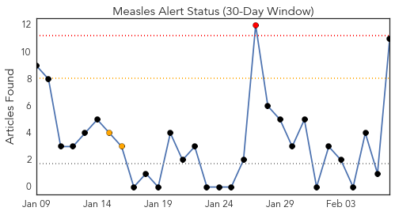
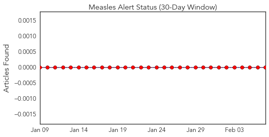
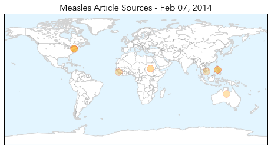
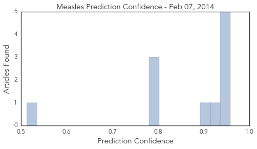

Toggle navigation
Early Warning
Daily Alerts
Measles
Feb 07, 2014
30 Day Trends
Web: 1
alerts
, 2
warnings
Twitter: 0
alerts
, 0
warnings
Top Articles:
0.959
Measles Warning Issued For Shoppers At Palisades Center Mall « CBS New York
0.957
Officials warn shoppers of possible measles exposure at Palisades Center mall
0.947
Calgary measles victims were ‘fully immunized’
0.943
Medical alert as more cases of measles reported
0.942
3 immunized Calgarians diagnosed with measles
0.914
Médecins Sans Frontières Launches Campaign in Guinea to Vaccinate 400,000 Children Against Measles
0.895
Four more confirmed cases of measles in Saskatchewan
0.800
The Good News, Bad News Story On Measles
0.799
SGGP English Edition- Ministry of Health Dispatches Measures to Fight Bird Flu
0.783
Violence in South Sudan overwhelms an already fragile health system
0.513
UN extends relief to displaced people outside South Sudanese town base for first time
Top Tweets:
No tweets found for Feb 07, 2014
Web/News Articles

Tweets

Article Locations

Article Confidences
